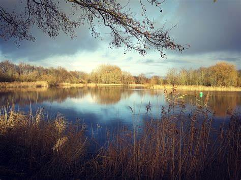

Bij Aviodrome kan je naast veel zien, lezen en horen, ook veel doen en beleven. Leef je uit op het springkussen, waan jezelf een echte piloot in de vliegsimulators of beleef een levensecht vliegavontuur in het 4D filmtheater.
 Op zoek naar een leuk uitstapje? Wat dacht u ervan om oog in oog te komen staan met een kudde galopperende przewalskipaarden, imposante edelherten of wroetende zwijnen? Wel eens een eland of wisent in het echt gezien? Ooit ooievaars zien broeden? Of Pater Davidsherten zien ravotten? Het is allemaal mogelijk in Natuurpark Lelystad. Het is soms wel even zoeken, de dieren leven in zeer ruime gebieden. Het park, is zo ingericht dat bezoekers zich er thuis voelen en al snel in de ban komen van het boeiende leven van de dieren. Kilometers lange fiets- en wandelpaden slingeren door het bosrijke terrein, waardoor een wandeling of fietstocht een ontdekkingstocht door de natuur is. In het bezoekerscentrum kunt u fietsen huren, zodat u het volledige park kunt bezoeken. Voor de kinderen is er ook voldoende te zien en te beleven. Zij kunnen hun kennis bijspijkeren met een speurtocht of rugzakroute, of zich uitleven in de speeltuin. Een bezoek aan Natuurpark Lelystad is dan ook zeker de moeite waard.